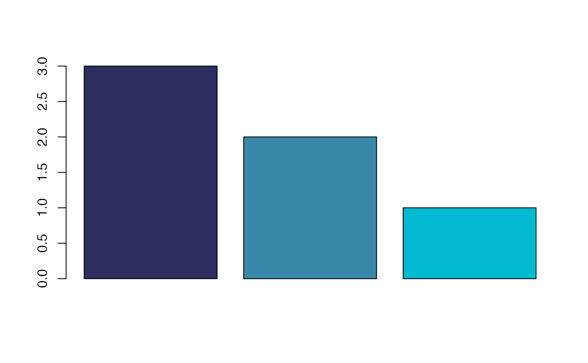
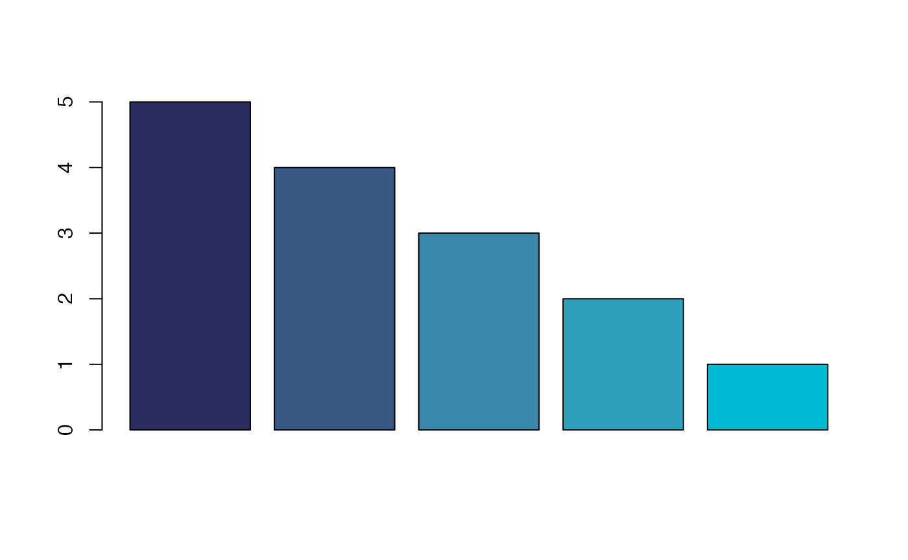
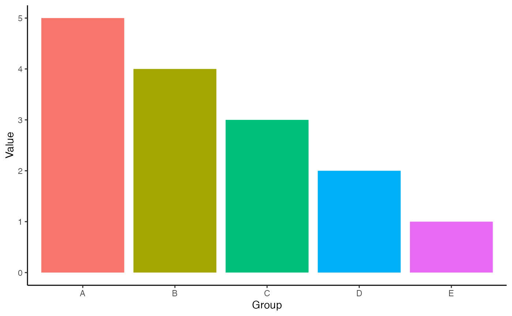
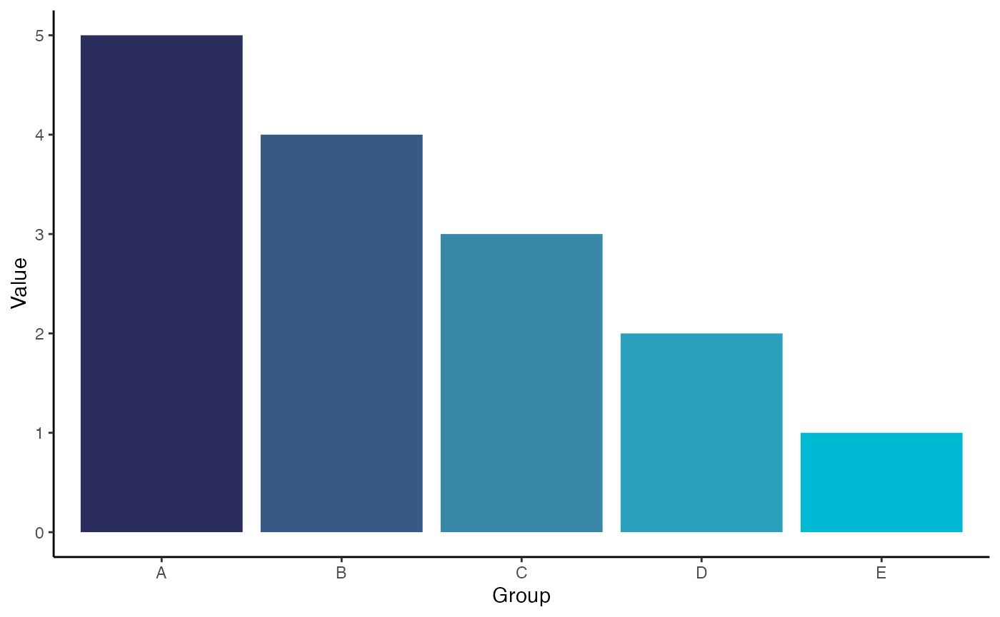
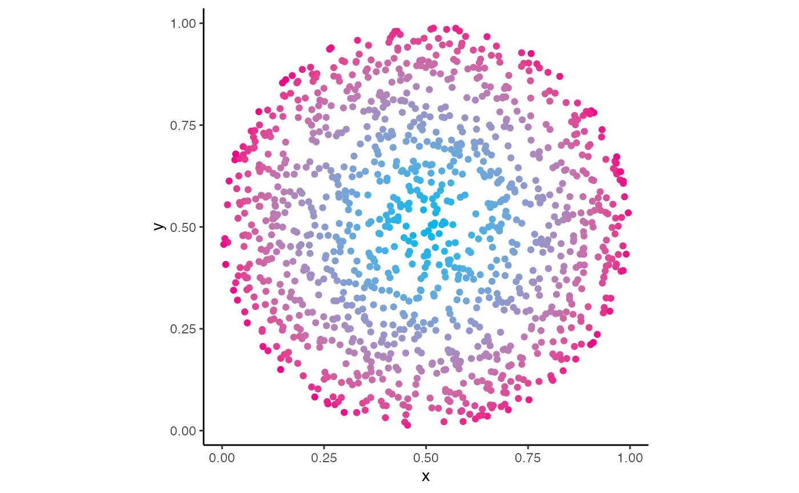

HGUTheme has three main classes of functions:
- Functions to return the HEX code of the colours used in the unit logos
- Functions to create palettes interpolating the colours used in the unit logos
- Functions to scale
ggplot2plot colour and fill aesthetics to use interpolated colour palettes from the unit logos
These are explained below with examples.
Returning Colour HEX Codes
The most basic functions return the colour HEX codes. This can be seen here
ukri_light_blue()
#> [1] "#00BAD2"This is useful to set colours for various aspects of plots or visualisations
barplot(
3:1,
col = ukri_light_blue()
)As well as returning individual colours, palettes based on the logo can also be returned that will contain every colour in the logo
ukri_blues()
#> [1] "#2D2E5F" "#3A88A9" "#00BAD2"This can be used to create plots such as this
barplot(
3:1,
col = ukri_blues()
)
Interpolating Colour Palettes
The UKRI blues palette only has three colours in it, however, what if you want to use more colours in your plot? You can also interpolate colours based on the theme, so say you want to use 5 colours from the UKRI blues you can use
ukri_blues_n(5)
#> [1] "#2C2D5F" "#375983" "#3987A9" "#2CA0BD" "#00B9D2"This can be used in plots like the following
barplot(
5:1,
col = ukri_blues_n(5)
)
Automatically Colour ggplot2 Plots
ggplot2 is a popular plotting library from the
tidyverse. It is used to create high quality
visualisations. An example of a basic ggplot2 plot is given
below
plot_data <- tibble(
x = LETTERS[1:5],
y = 5:1
)
plot_data %>%
ggplot() +
aes(x = x, y = y, fill = x) +
geom_col() + theme_classic() +
guides(fill = "none") +
labs(x = "Group", y = "Value")
The plots made by ggplot2 are created in layers. Another
layer can be added from HGUTheme to recolour this plot with
unit logo colour themes.
plot_data %>%
ggplot() +
aes(x = x, y = y, fill = x) +
geom_col() + theme_classic() +
guides(fill = "none") +
labs(x = "Group", y = "Value") +
scale_fill_ukri_d()
There are layers for changing the colour and the fill aesthetics of your plot. These functions end in either a c or a d indicating whether you are using a continuous or a discrete scale.
For continuous scales, v0.1.0 of HGUTheme will only
automatically interpolate between the colours of the logo, as shown here
with this CRUK logo colour theme.
tibble(
x = runif(1500),
y = runif(1500)
) %>%
filter(
(x - 0.5)^2 + (y - 0.5)^2 < 0.25
) %>%
mutate(
col = (x - 0.5)^2 + (y - 0.5)^2
) %>%
ggplot() +
aes(x = x, y = y, colour = col) +
geom_point() + theme_classic() +
guides(colour = "none") + coord_equal() +
scale_colour_cruk_c()
It is important to note, that these layers do not have to be used and
the HEX code functions can be used to supply arguments to pre existing
ggplot2 layers for similar effects, for example if the user
wanted to recreate the above plot but without the dark blue, this can be
acheived via
tibble(
x = runif(1500),
y = runif(1500)
) %>%
filter(
(x - 0.5)^2 + (y - 0.5)^2 < 0.25
) %>%
mutate(
col = (x - 0.5)^2 + (y - 0.5)^2
) %>%
ggplot() +
aes(x = x, y = y, colour = col) +
geom_point() + theme_classic() +
guides(colour = "none") + coord_equal() +
scale_colour_gradient(
low = cruk_light_blue(),
high = cruk_pink()
)